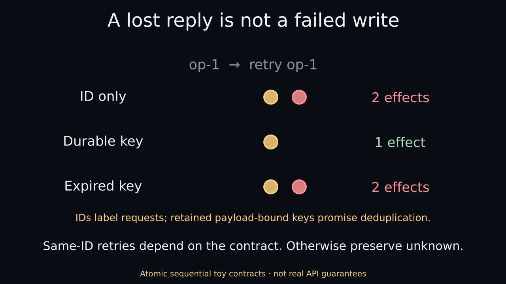

A lost reply is not a failed write
Actual Manim Community 0.22.0. SYNTHETIC CONTRACTS · NOT REAL API GUARANTEES.
Nothing plays automatically. The static poster and complete transcript are the reduced-motion path.

MP4 · Optional GIF · Static PNG · Text transcript · Captions
Complete transcript
00–08 seconds
A service can commit even when its reply is lost.
A caller submits op-1, add A. The toy service commits one effect and loses the reply. The caller observes reply unavailable. Hidden effects are evaluator-only ground truth, not information contained in the timeout.
08–16 seconds
The same timeout can hide zero or one initial commit.
Two hidden histories produce the same caller observation: no initial commit with zero effects, or an initial commit with one effect. The caller sees reply unavailable in both. A missing or stale lookup is not automatically proof of noncommit.
16–24 seconds
Same-ID retries depend on the contract. Otherwise preserve unknown.
One sequential retry after an initial commit yields two effects with ID only and no deduplication; one with a retained durable payload-bound key; and two when a key expires exactly at retry time. If the initial call never committed, a no-dedup retry yields one effect. Effects survive key expiry; cache hits do not renew lifetime. The toy uses atomic calls, a single sequential caller and no late in-flight original. A live recovery decision also needs freshness, payload scope, expiry and whether the original may commit later. A reliable committed result may resolve uncertainty; otherwise preserve unknown. No real request or write occurs in this animation.